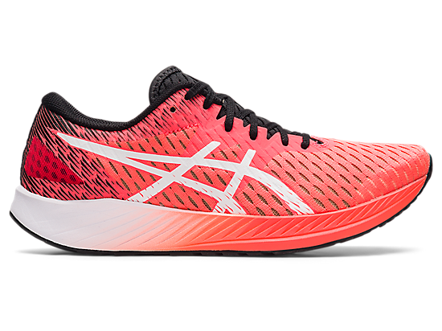

Asics Hyper Speed Features

- A springy toe-off makes every step feel more energetic
- A comfortable fit, thanks to the highly breathable and secure mesh upper
- A smooth heel-to-toe transition with every stride
Runners will love the value the Hyper Speed brings to the racing category. At a time where racing shoes are becoming more teched up, the Hyper Speed keeps racing simple and at an affordable price. With these new updates, runners of all levels will enjoy the experience the ASICS Hyper Speed offers.